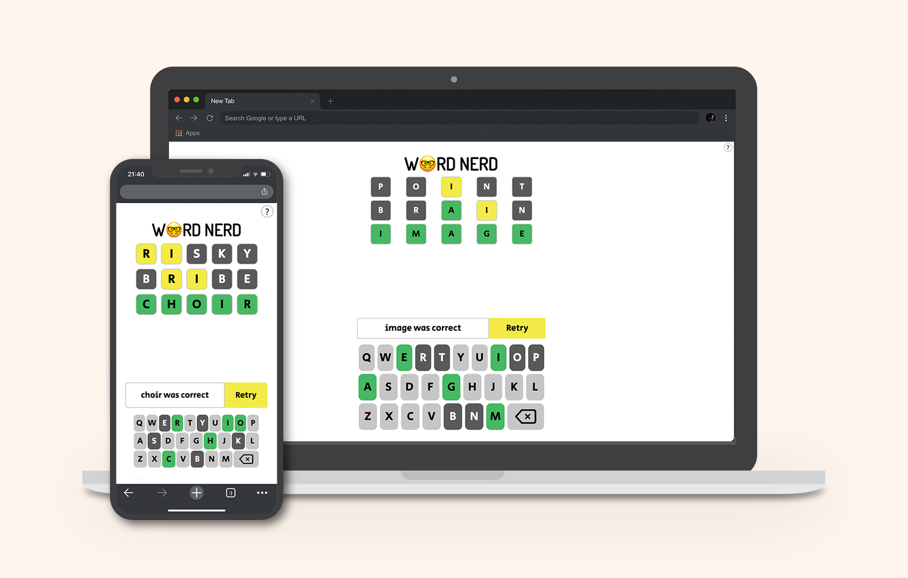

Word Nerd

Word Nerd is a JavaScript game inspired by Wordle.
HTML • CSS • JavaScript
Job Listings Website
A website built with React and SASS that consumes an existing API.
React • SASS
Illustrators Collection
A collection of my favourite illustrators that links to an SQL database and displays on the front end.
PHP • HTML • CSS